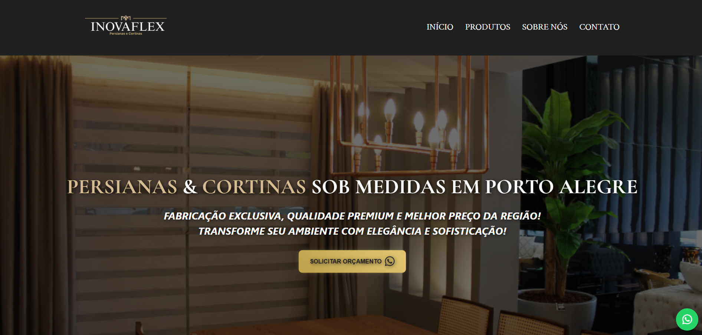
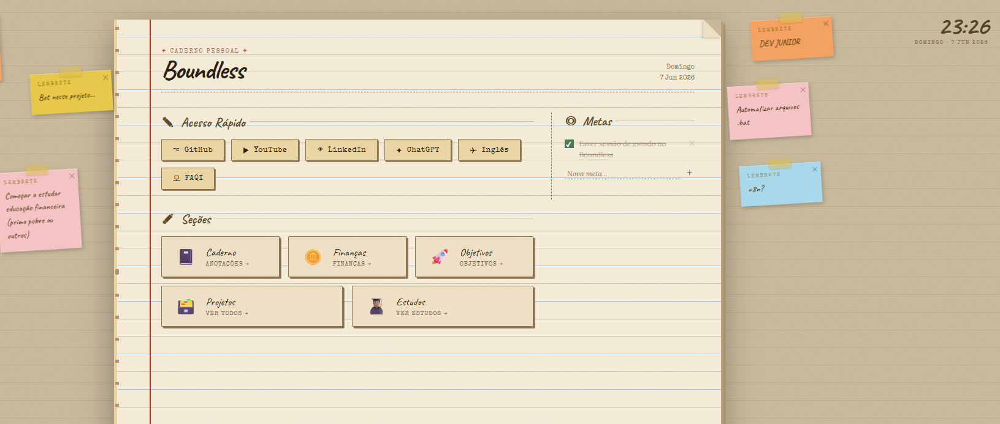
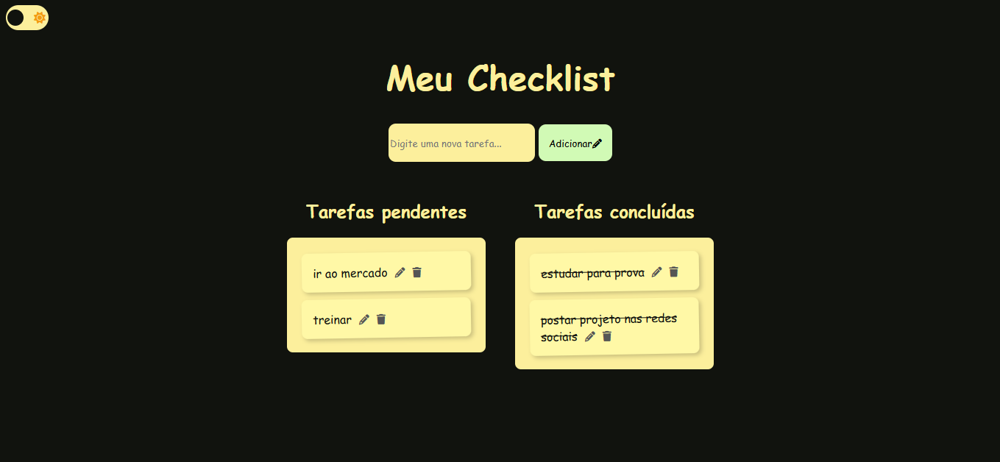
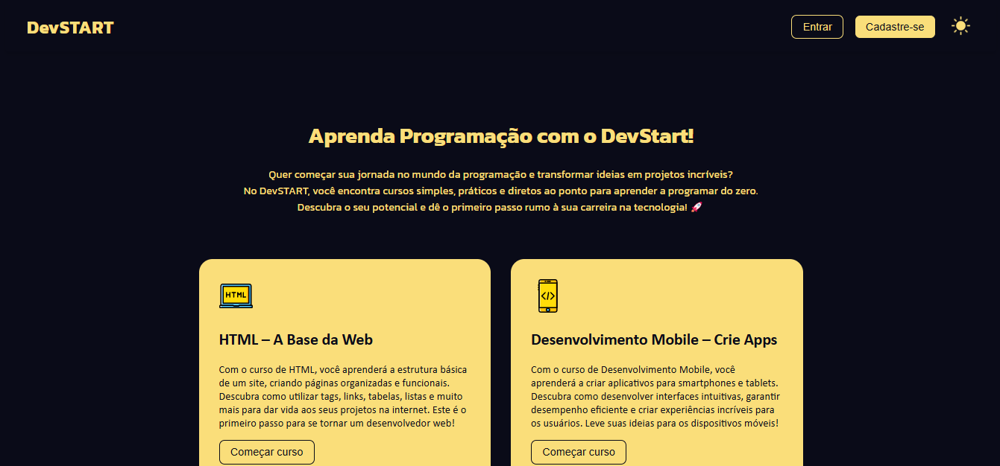

Henrique Alonso
Fullstack Developer
Baixar CurrículoSobre Mim
Olá! Meu nome é Henrique Alonso e sou estudante de Análise e Desenvolvimento de Sistemas, atualmente no 5º semestre da faculdade FAQI.
Atualmente, estou atuando como estagiário em desenvolvimento de software, trabalhando com tecnologias como PHP, Laravel, MySQL, JavaScript, HTML e CSS no desenvolvimento de sistemas internos (intranet), automação e projetos BI. Tenho contato com organização de código, versionamento com Git/GitHub e manutenção de aplicações reais em ambiente corporativo.
Possuo experiência tanto em front-end, criando interfaces modernas e responsivas, quanto em back-end, desenvolvendo lógicas e integração com banco de dados. Também já atuei com suporte técnico, o que fortaleceu minha visão prática de sistemas e resolução de problemas.
Meu objetivo é evoluir como desenvolvedor full stack, construindo soluções completas, eficientes e bem estruturadas. Estou em constante aprendizado, buscando aprimorar minhas habilidades e crescer profissionalmente na área de tecnologia.

Formação
Análise e Desenvolvimento de Sistemas
Faculdade FAQI
2024 - 2026 (em andamento)
Experiência
Desenvolvedor Fullstack
AtualIpê Saúde · Estágio
Fevereiro 2026 – Presente
Atuo no desenvolvimento Full-Stack e manutenção de sistemas internos (intranet), utilizando o ecossistema PHP com Laravel no Back-end e garantindo o dinamismo e a estilização das interfaces através de JavaScript e CSS e Bootstrap. Sou responsável pela construção de automações para inteligência de negócios (BI), otimizando o fluxo e a análise de dados da empresa. Atuo fortemente na refatoração, organização e padronização do código — centralizando regras de negócio em controllers para garantir uma arquitetura escalável e de fácil manutenção. No dia a dia, gerencio o banco de dados MySQL via DBeaver, configuro ambientes com XAMPP, WAMP e utilizo o GitHub de forma avançada para versionamento de código e colaboração via VS Code.
Suporte Técnico
Ipê Saúde · Estágio
Dezembro 2025 – Fevereiro 2026
Atuei no suporte técnico, realizando atendimento a usuários por meio de chamados no sistema GLPI. Fui responsável por formatação e configuração de computadores, acesso remoto utilizando UltraViewer, manutenção de hardware e suporte geral em TI. Também utilizei Active Directory para gerenciamento de usuários e permissões.
Desenvolvedor Web
Autônomo · Freelance
Agosto 2025 – Dezembro 2025
Desenvolvimento de site institucional, configuração de hospedagem e criação de solução interna personalizada, atuando de forma independente como freelancer.
Tecnologias
PHP
Laravel
JavaScript
MySQL
Node.js
HTML
CSS
GitHub
Git
Projetos
Uma seleção dos trabalhos que desenvolvi — de sites para clientes a projetos pessoais e acadêmicos. Use os filtros para navegar.

Boundless
Plataforma pessoal em PHP para centralizar finanças, metas e estudos, com estética inspirada em cadernos vintage e Pomodoro.

Projeto Acadêmico Fullstack
Meu primeiro projeto full stack: back-end em Node.js e Express, banco MySQL e interface em HTML e CSS, do zero até o deploy.

Projeto pessoal - Cursos online
Plataforma de cursos online em front-end puro, treinando modo escuro, cards animados e navegação com JavaScript sem libs.